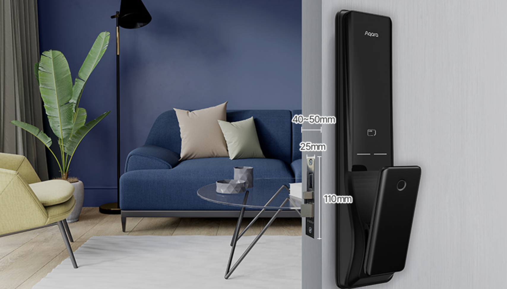
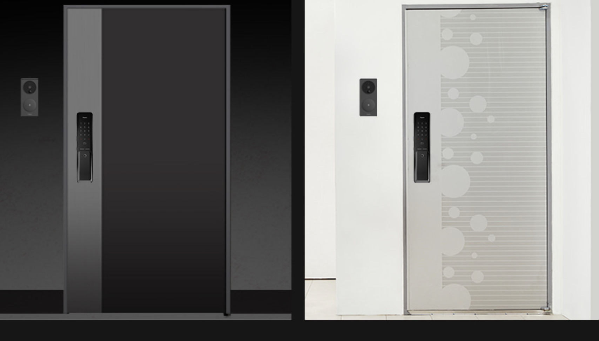
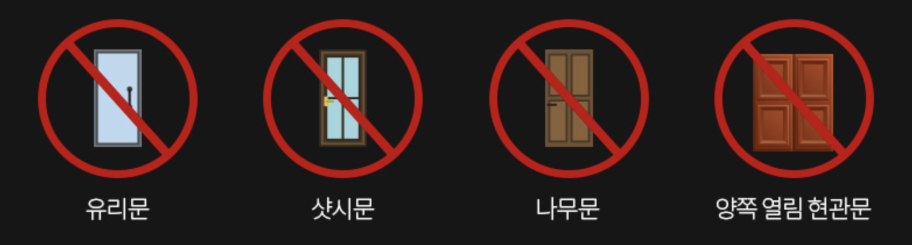
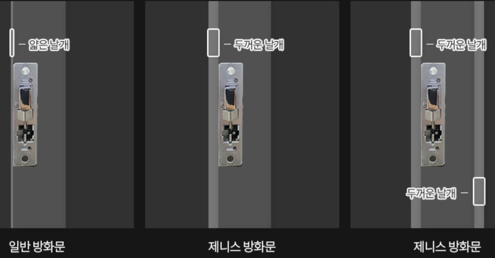
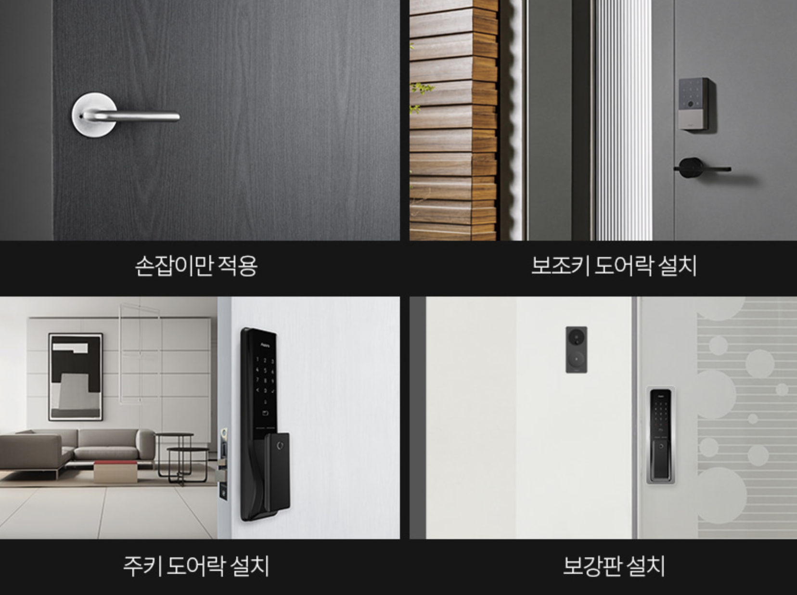
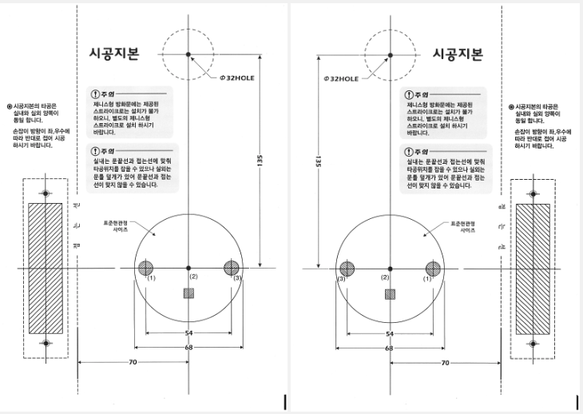
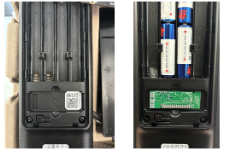

15 K100-설치환경 확인
도어락 K100 사용하다가 고장이 나거나 못들어 가는 상황이 생기면 1544-3413(24시간, 365일 긴급상담)로 연락하시기 바랍니다.
질문 1: 스마트 도어락 (K100)의 설치 방법을 알 수 있을까요?
답변 1:
스마트 도어락 (K100)의 설치 영상과 매뉴얼은 아래 링크를 클릭하시면 보실 수 있습니다.
질문 2: 도어락 K100의 설치 가능 규격은 어떻게 되는지요?
답변 2:
(1) 문두께 및 모티스 규격은 다음과 같습니다. 아래 규격에 맞지 않는 경우 설치가 불가능 할 수 있습니다.
문두께: 40 ~ 50 mm
모티스 규격: 세로 110mm, 가로 25mm

(2) 문종류
- 표준규격 방화문 설치를 지원하는 제품

- 설치 불가능한 문: 유리문, 샷시문, 나무문, 양쪽 열림 현관문

- 제니스 방화문(유럽형 구조의 방화문) 사용시 문두께를 보완하는 추가 부족품 설치가 필요할 수 있으며 보완작업없이 설치할 경우 문제가 생길 수 있습니다.
문 두께를 보완하는 추가 부속품 설치
내부, 외부 비대칭을 보완하는 추가 작업

(3) 타공 및 보강판 작업
- 현재 타공 상황에 따라 추가로 보강판 작업이 필요할 수 있으며, 현장 설치 진행시 추가 금액 지불이 필요할 수 있습니다.

- 해당 제품의 타공 도면은 아래 그림과 같습니다.

질문 3: 문 두께가 80 mm인데 샤프나 부자재를 이용하여 Aqara 도어락 K100 설치가 가능한지 요?
답변 3:
문 두께가 80 mm일 경우에는 샤프트나 부자재로 적용이 불가능합니다. 도어락 K100은 40~50 mm 일반 방화문 사용 조건에서만 사용 가능한 제품입니다. 일부 중국에서 판매되는 부자재의 경우도 문 두께가 65mm까지만 설치 지원합니다.
질문 4: 제니스 방화문일 경우 부자재로 보완하여 설치 가능하다고 들었습니다. 어떤 추가 부속을 보완하게 되나요?
답변 4:
제니스 전용 스트라이커를 추가 구매하여 보완할 수 있습니다. 또한 문 두께 보완 또는 내 외부 비대칭 보완 작업이 필요할 수 있습니다.
질문 5: 제니스형 스트라이커, 보강판 등의 부품만 따로 구매가 가능한가요?
답변 5:
네, 가능합니다. 아카라 공식홈페이지에서 액세서리 카테고리로 접속하시면 도어락의 부자재만 별도 구매가 가능하며 해당 페이지 내에서 구매 가능한 목록을 제외한 부품은 별도 구매가 어려운 점 양해 부탁드립니다.
질문 6: 월패드 연동하려고 합니다. 수신기는 어떻게 설치하고 연동하면 되나요?
답변 6:
월패드 모델 등 설치환경이 다양하여 상세한 안내가 어려우며, 수신기는 아래와 같은 방법으로 설치 가능합니다.
네이버 아카라카페에 가입하시면 커뮤니티 회원분들께 자가설치 팁을 받을 수 있습니다.
- K100 RF447 모듈 설치는 건전지를 모두 제거하신 후 진행해 주십시오.
K100 RF447 모듈 설치 방법
송신기를 월패드에 설치하세요.
도어락 배터리 커버를 열고 아래와 같이 RF447 수신모듈 장착부에 수신기를 장착해 주세요. 핀 방향을 정확하게 확인 후 꽂아 주세요.
수신 모듈로 인해 애플홈 QR코드가 가려지므로, 애플홈킷 사용자분께서는 수신 모듈 장착전에 애플홈에 도어락을 추가하신 후 진행해 주세요.

K100 RF447 모듈 등록 방법
도어락 후면의 배터리 커버 내 [R] 버튼을 누릅니다.
도어락 키패드에 [5] 누릅니다.
[5] 버튼을 눌러 RF447 모듈을 등록합니다. => 음성 멘트: (등록 성공시) “등록 성공”
질문 7: 현재 코콤 월패드에 연동이 되어 있는데 도어락 설치후 연동이 가능한가요? 추가 부품과 비용을 알고 싶습니다.
답변 7:
월패드 연동 관련한 문의는 들락날락 컴퍼니를 통해 상담이 가능합니다. 아래 링크 접속하시면 해당 스토어 페이지로 접속이 가능합니다.
질문 8: 아카라 도어락 설치를 고려하고 있습니다. 저희 집이 60T 성우 스타게이트 도어를 사용하고 있는데, 여기에 아카라 도어락 설치가 가능한 지요?
답변 8:
제니스 방화문을 제외한 다른 설치 가능한 일반 방화문의 규격은 40-50mm입니다. 이 규격을 벗어날 경우 설치가 불가능합니다.
질문 9: 기존에 게이트맨 도어락 설치되어 있는데 이 자리에 K100 설치가 가능할까요?
답변 9:
K100 스마트 도어락은 2개의 타공이 필요한 푸시풀 도어락이며, 타공위치 및 타공 사이즈는 KS C 9806 규격을 따릅니다. 만약, 기존 도어락이 보조키 방식인 경우라면 추가 타공이 필요할 것이며, 푸시풀 방식인 경우 기존의 타공을 이용할 수도 있습니다. 다만, 기존 도어락 연식과 모델에 따라 타공위치 및 사이즈가 다르다면 추가로 보강판이 필요할 수 있으며 더욱 정확한 사항은 설치 기사님께서 현장 방문 후 안내드릴 수 있습니다.
- 질문/답변 4의 시공지본 참고 하십시오.
질문 10: 보강판 사이즈는 어떻게 될까요?
답변 10:
보강판 사이즈는 가로: 11cm 세로: 48.5cm 입니다.
질문 11: 실외 설치해도 되는지요? 방수는 가능한지요?
답변 11:
본 제품은 일반 거주 환경의 방화문을 타겟으로 고안된 제품으로 직사광선 또는 비바람에 노출되는 실외 사용 용도로는 적합하지 않습니다.
질문 12: 이사 할 때 이전 설치가 가능할 까요?
답변 12:
별도로 이사 시 연락을 주시면 설치 기사를 연결 해 드리는 서비스는 제공되지 않습니다. 다만, 아카라 K100 도어락의 경우 시중에 유통되는 많은 도어락의 규격과 호환되는 일반 규격입니다. 따라서 이사 시 주변 도어락 설치 업체를 통해 어렵지 않게 이전 설치가 가능합니다.
질문 13: 제품은 받았는데 설치기사 해피콜은 언제 오나요?
답변 13:
설치 기사님 배정은 완료 되었으며 기사님께서 순차적으로 전화 드리고 방문 할 예정입니다. 조금만 시간 양해 부탁드립니다. (경우에 따라 기사 연락처 안내 가능)
질문 14: 도어락을 주문하려고 하는데 이사 준비 때문에 바로 설치는 불가능해서 미리 구매하면 나중에 비용지불하고 추후에라도 설치가 가능한지요?
답변 14:
네 가능합니다. 단, 구매하신 뒤에 꼭 고객센터를 통해 주문 정보와 함게 별도로 요청해 주시면 됩니다.
질문 15: 문 두께가 30mm인데, 부자재를 통해서 설치가 가능한지요?
답변 15:
문두께가 최소 4~5cm이상 부터 설치가 가능하며, 3cm의 경우 설치가 어렵습니다.